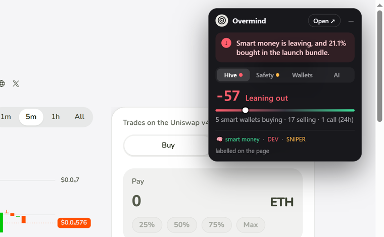
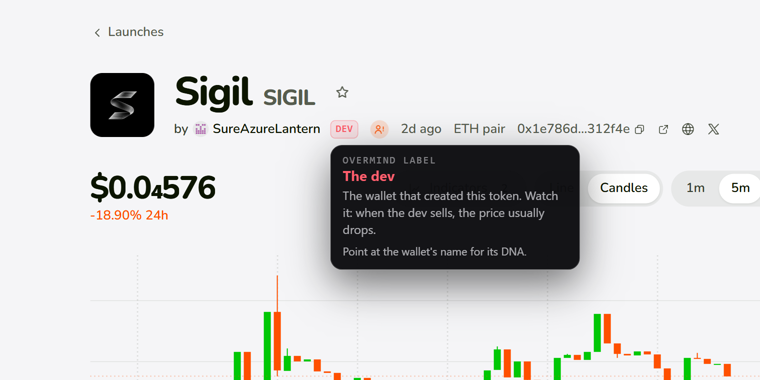
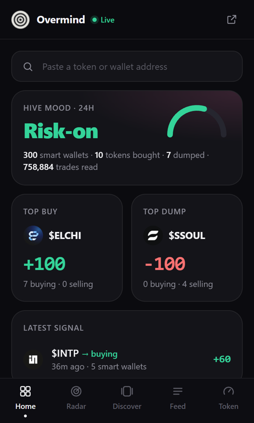

Before you buy a token,
know who's on the other side.
Overmind watches the ~300 most profitable wallets on Robinhood Chain and checks every token for snipers, bundles and dev rugs. This extension puts that answer right on Pons and DexScreener, in one line.
Open any token on Pons or DexScreener
A small Overmind card appears in the top-right corner of the page. Nothing to click, nothing to sign in to.

Read the first line. That's the answer.
It combines what smart money is doing with the safety check, in plain words:
Want details? The tabs under it show the score, the safety check, which smart wallets hold it, and Overmind AI's read.
See who is trading, right in the list
Wallets in the page's trades and holders get labels. Point at a label to see what it means, point at a name for that wallet's DNA.

Pin the icon for the whole hive
Click the puzzle piece 🧩 next to the address bar, then the pin next to Overmind. Its window shows what smart money is buying and dumping right now, a radar, a live feed, and Wallet DNA for any address.

Overmind reads public on-chain data. It is not financial advice. The extension only reads token and wallet addresses already on the page, and stores nothing about you.